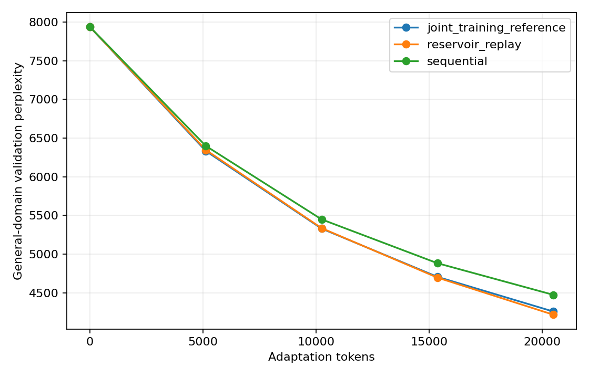
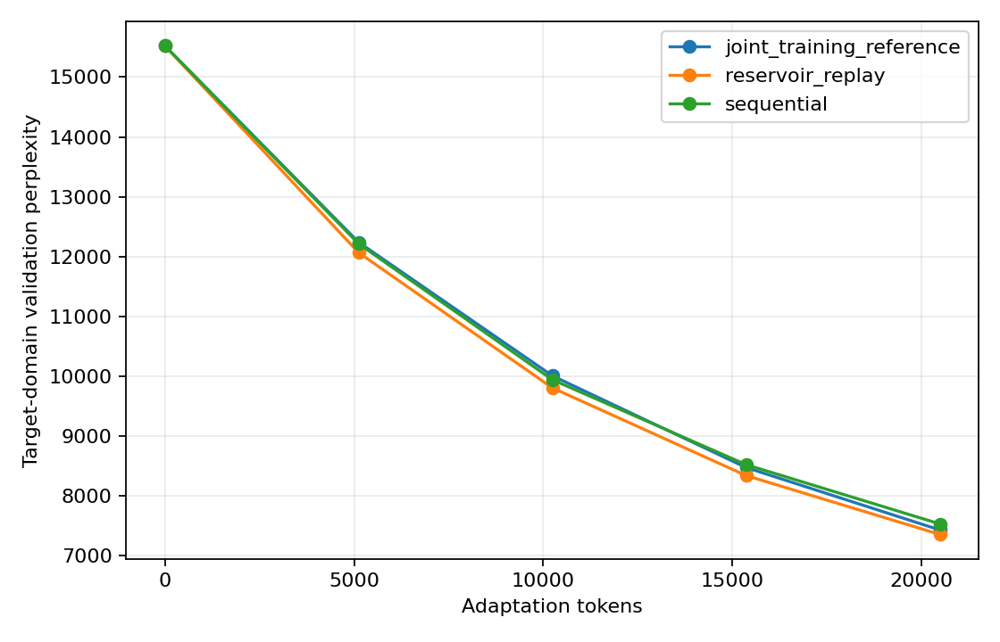

The question
Fixed budget, separate validation sets.
Can replay reduce catastrophic forgetting during continual pretraining under a fixed token budget?
General domain
WikiText-2 raw provides the initial training stream and the validation set used to measure retained capability.
Target domain
AG News provides a separate stream for domain adaptation. Raw data is downloaded locally and is not committed.
Recorded results
Single-seed exploratory run
| Strategy | General PPL | Target PPL | Forgetting |
|---|---|---|---|
| Sequential | 4,474.44 | 7,534.90 | -0.5731 |
| Reservoir replay | 4,217.56 | 7,358.84 | -0.6322 |
| Joint-training reference | 4,258.46 | 7,433.48 | -0.6226 |


The first run did not produce a forgetting regime. General-domain loss decreased for every strategy, so the result is recorded as a limitation rather than presented as evidence that replay solved catastrophic forgetting.
Implementation
Small codebase, explicit measurements.
Model and training
- JAX, Flax and Optax
- Causal self-attention and learned positional embeddings
jax.jitandjax.value_and_grad- Checkpoint save/resume and masked perplexity
Experiment controls
- Same initial checkpoint for every strategy
- Same 20,480-token adaptation budget
- Algorithm R reservoir sampling
- Evaluation at 0%, 25%, 50%, 75% and 100%